Part 1
Description
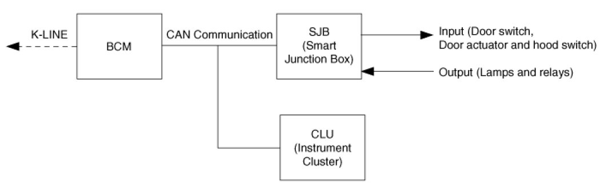
Body control module receives various input switch signals controlling time and alarm functions for the intermittent wiper timer, washer timer, rear defogger timer, seat belts warning, central door lock, ignition key reminder, power window, door warning, tail lamp, crash door unlock, ignition key hole illumination, rear fog lamp control and keyless entry & burglar alarm.
BCM, SJB(Smart Junction Box) and CLU(Instrument Cluster) are connected by CAN line.
The nearest module with input switch or actuator receives the input data to reduce the wiring and then send input data to the others which need them via CAN lines.
In case of sending output, it is used to CAN communication, not wiring.
SJB can also control relays and IPS.
So Each module allots the current data and actuation data.
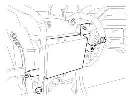
Function
Wiper Control
Washer Control Coupled With Wiper
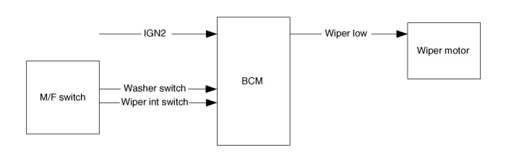
1. Under IGN2 = ON, wiper LOW relay is turned ON after T2 from Washer switch ON if washer switch is ON for T1 and wiper LOW relay is turned OFF after T3.
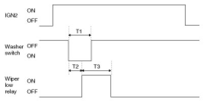
T1:0.06s~0.2s, T2:0.3s ±0.1s, T3:0.7s ±0.1s
2. Under IGN2 switch ON, wiper LOW relay is turned ON after T2 from Washer switch ON if washer switch is ON for at least T1, and wiper LOW relay is turned OFF after T3 from the moment that Washer switch is turned OFF.
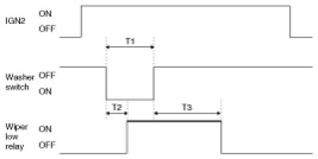
T1:0.2s(MIN), T2:0.3s ±0.1s
T3:2.5s~3.8s(2 - 3 Turn)
3. Operation in Item (2) is performed if Washer switch is ON for at least T1 during WIPER operation with Wiper int switch. Operation in Item (1) is performed if Washer switch is ON for T6.
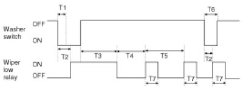
T1:0.2s(MIN) , T2:0.3s ±0.1s
T3:2.5s~3.8s(2 - 3 Turn), T4:T5 - 0.7s
T5:INT TIME, T6:0.06s ~0.2s, T7:0.7s ±0.1s
4. Operation is cancelled in case of IGN OFF during T3.
5. Give priority to WASHER interlocking WIPER than Speed sensing INT WIPER function.
6. Washer switch signal input shall be ignored at start-up (IGN1 ON & IGN2 OFF states).
7. Switch ON time includes chattering time
Front Wiper Mist Function Wiper
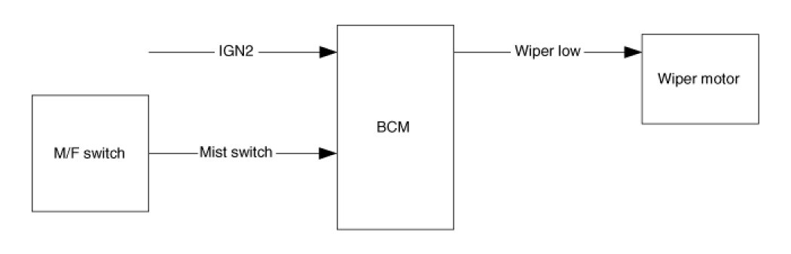
1. Function Description
In case of IGN2 On (IGN2 ON), if turning on the Wiper Mist switch(Wiper Mist switch On), then Wiper is controlled, by switch on time. Mist operation does not work at Wiper Washer.
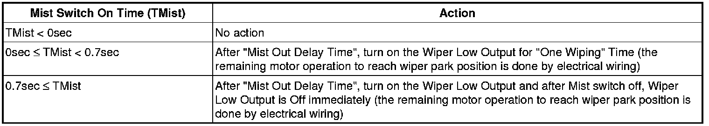
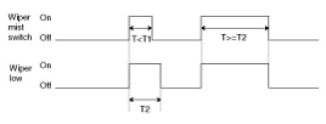
T1 : One Wiping, T2 : Mist One Time
2. Under IGN2 switch ON, Wiper LOW relay is turned ON immediately from Mist switch ON if Mist switch ON for more than T1, Wiper LOW relay is turned OFF after T2 from Mist switch OFF.
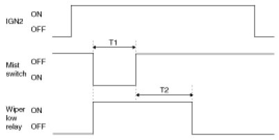
T1 : 0.7s(Min), T2 : 0.7s±0.1s
Variable Int Wiper
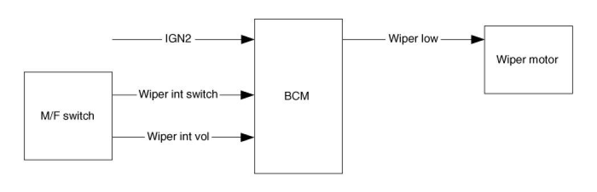
1. Under IGN2 switch ON & Wiper Int switch ON states, and wiper int volume value are acquired and intermittent time is calculated. then, wiper intermittent time is automatically converted.
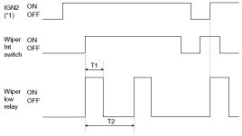
T1 : 0.7 ± 0.1s, T2 : INT Time( 2.2 ± 0.2s ~ 10 ± 1s)
*1 ON : IGN2 = ON OFF: IGN2 = OFF
2. Wiper Control Precaution
(1) Variable int wiper
A. Wiper low relay time is 0.7s ±0.1s.
B. Intermittent time is from output ON to the next output ON.
C. Wiper low relay output is continued for remaining ON time if INT switch is turned OFF during output.
D. Intermittent time is restarted when IGN2 switch is ON and wiper Int switch is changed from OFF to ON.
E. Intermittent time is restarted when wiper int switch is ON and IGN2 switch is changed from OFF to ON
F. 2.5V is used when volume value is 2.5V or more.
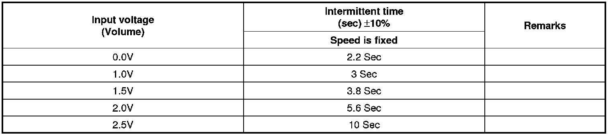
Buzzer Control
Data Flow
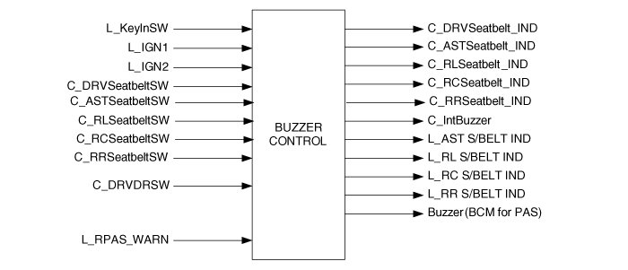
Buzzer Sound
1. Buzzer sound spec
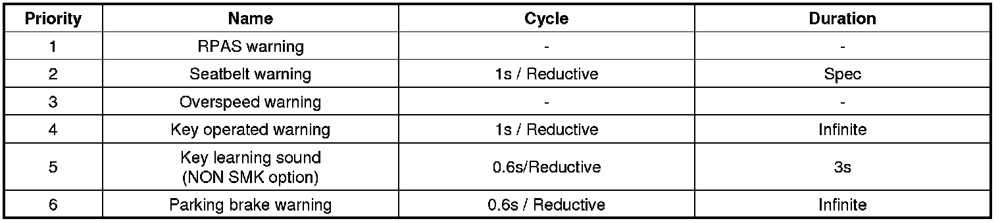
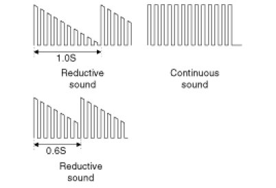
2. Buzzer output
Buzzer output to estimate BCM int buzzer in cluster, and data transmission.
** Internal buzzer is used for rear parking assist system.
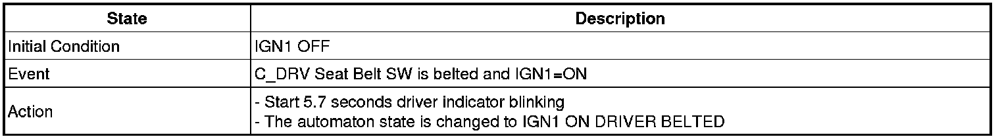
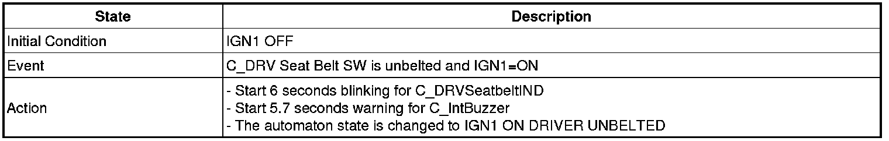
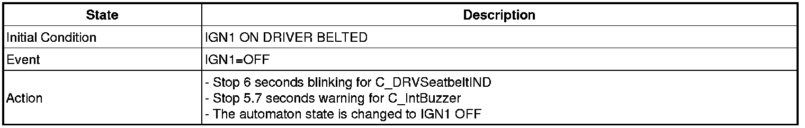
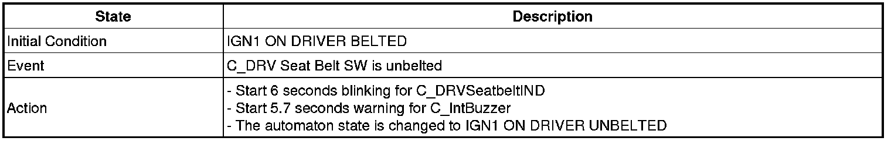
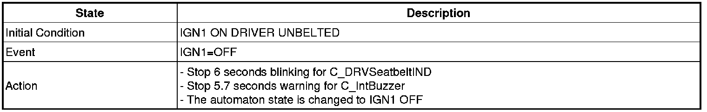
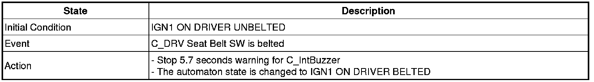
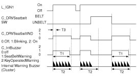
Seat belt reminder (Driver seat)
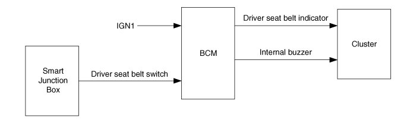
1. From IGN1 switch ON, Warning lamp for 1sec (DUTY 50%) and Chime buzzer for 6 time every 1sec. (in case of S/BELT unfastened state) But, within 6sec in the S/BELT fastened, the Chime buzzer output is stop, and Warning lamp is the remaining time.
2. Lamp and Chime buzzer become output stop when IGN1 is turned OFF within 6sec-output.
3. If vehicle speed over 10Km/h, Warning lamp and Chime buzzer will operate when Seat belt unfastened after IGN ON.
4. If vehicle speed below 5Km/h or IGN OFF or seat belt fastened, the pattern is stopped.
5. Seat belt fastened->unfastened when IGN1=ON state : if vehicle speed over 10Km/h,1time output. And if vehicle speed 5 - 10Km/h, Warning lamp for 1sec (DUTY 50%) and Chime buzzer for 6 every 1s. If vehicle speed less than 5Km/h, Warning lamp for 6 every 1sec (DUTY 50%)
Key Operated Warning
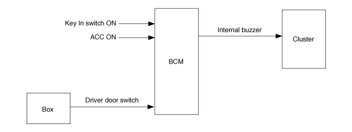
1. Internal buzzer on every 1sec when driver door switch is on and key ign on.
2. Output is off if key ign is in off and driver door switch closed are met during Internal buzzer output.
3. At IGN1 on, output is off.
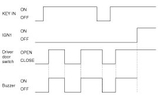
T1 : 1 ± 0.1sec
KEY IN ON : Key in switch ON or ACC ON or fob in ON
KEY IN OFF : Key in switch OFF and ACC OFF and fob in OFF
Parking Brake Warning
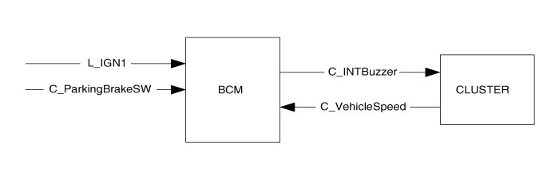
Parking Brake Warning Control Function In/Out List
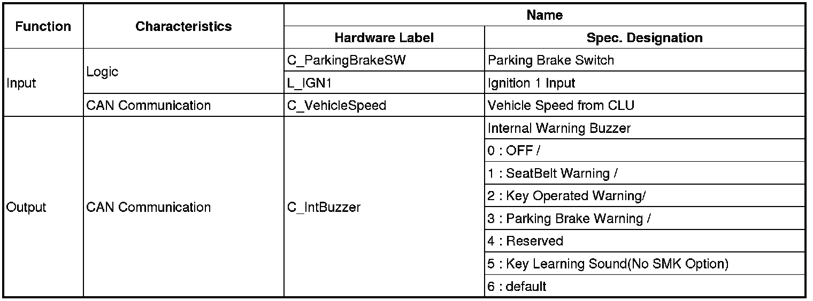
1. Behavior Characteristics
If driver drives the vehicle with non-parking brake or not completely released and vehicle speed exceeds the specific value of 5km/h, a sound warning reminds the driver that parking brake has to be released.
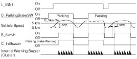
2. Parameter Values
Parking Brake Warning Buzzer Sound Characteristics
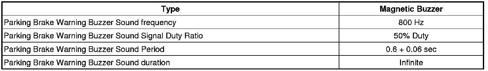
IGN Key Hole Illumination
Data Flow
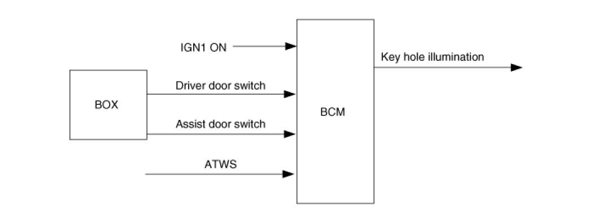
Function Description
1. O_Key Hole Illumination is turned ON at L_IGN1 = OFF & C_DRVDRSW(OR C_ASTDRSW) = OPEN.
2. After 20min at (1) State, O_Key Hole Illumination output is turned OFF.
3. At (1) State, if C_DRVDRSW(OR C_ASTDRSW ) is closed O_Key Hole Illumination output continue ON state during 30s and after turned OFF.
4. At (1) State, when L_IGN1 is turned ON O_Key Hole Illumination is immediately turned OFF.
5. If ATWS state are ON, O_Key Hole Illumination is immediately turned OFF.
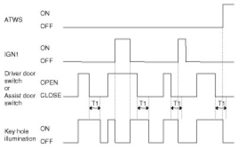
T1 : 30 ± 1sec
Defogger & Deicer Timer Control
Data Flow
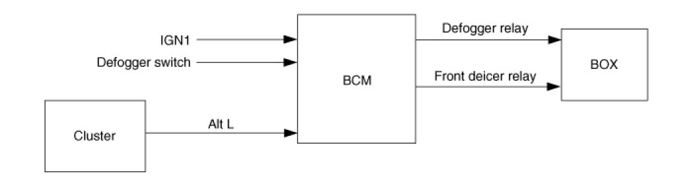
Defogger & Front Deicer Timer
1. Defogger relay & Front deicer relay is turned ON for 20min if defogger switch ON after Alt L ON & IGN1 ON.
2. Defogger relay & Front deicer relay is turned OFF if again defogger switch ON during defogger relay ON.
3. Defogger relay & Front deicer relay is turned OFF if Alt L OFF or IGN1 OFF during defogger relay ON.
4. Defogger relay & Front deicer relay and OFF of the output will remain at Defogger switch ON & Alt LON.
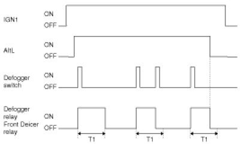
T1 : 20 ± 1min
Decayed Room Lamp & Keyless Unlock Timer
Delay Out Interior Lamp
- IGN1 off the door (Trunk excluded) will be lit to open the room lamp.
- Room lamp 4 Door closes, a 30-second delay will be lights out.
- 4 Door in closed IGN1 off & (Key in -> Key out): 30-second delay will be lights out.
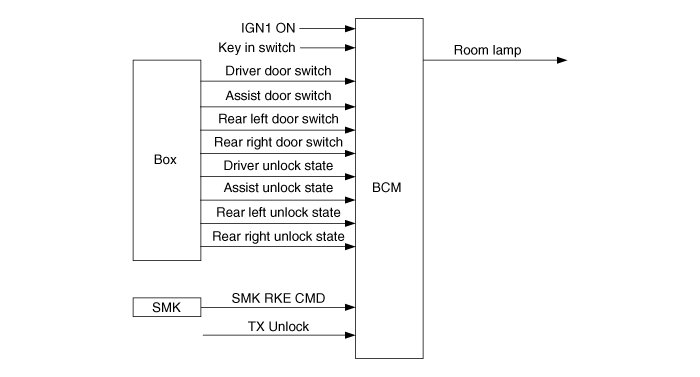
** TX UNLOCK : Include UNLOCK by KEYLESS or SMK
** IGN KEY=IN->OUT
: IGN KEY=ON->OFF & ACC=ON->OFF & IGN1=ON->OFF & IGN2=ON->OFF
** b_4DOORSW
: b_4DOORSW = ON (C_DRVDRSW=OPEN or C_ASTDRSW=OPEN or C_RLDRSW=OPEN or C_RRDRSW=OPEN)
: b_4DOORSW = OFF (C_DRVDRSW=CLOSE & C_ASTDRSW=CLOSE & C_RLDRSW=CLOSE & C_RRDRSW=CLOSE)
Description Of State
1. Room Lamp off
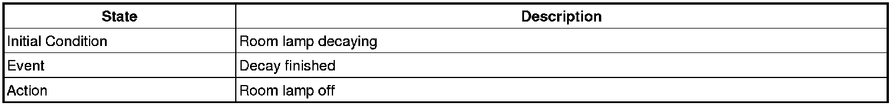
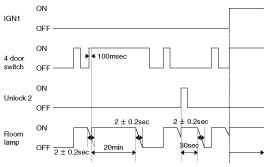
2. Room Lamp on
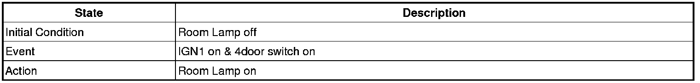
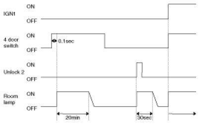
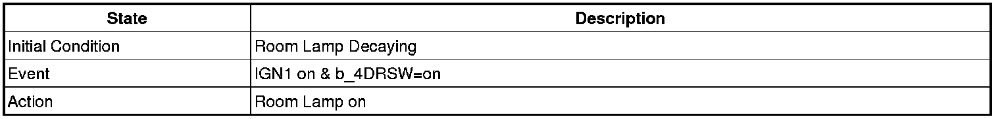
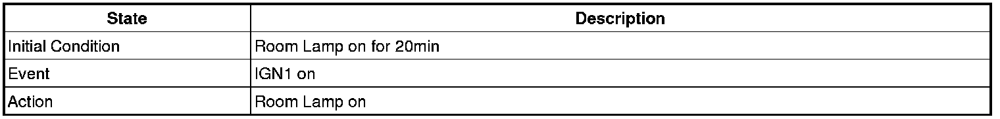
3. Room Lamp on for 30s
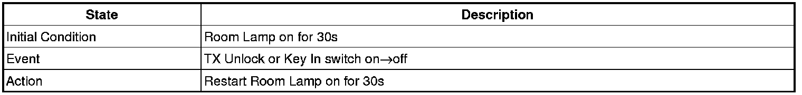
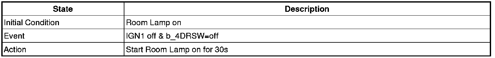
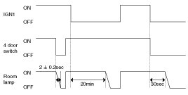
NOTE:
- The flickering of lamp is not allowed even though IGN1 ON
- The resolution of Decayed Room Lamp must be more than 32 step.
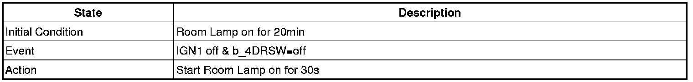
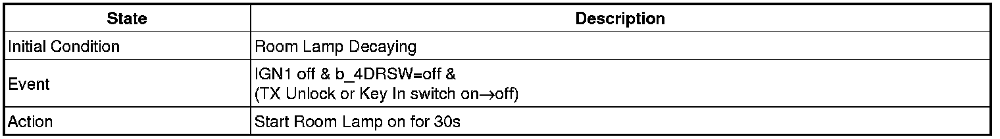
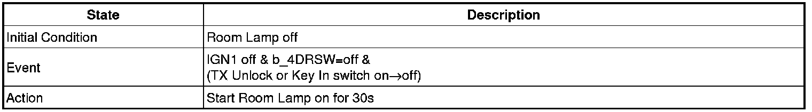
4. Room Lamp Decaying
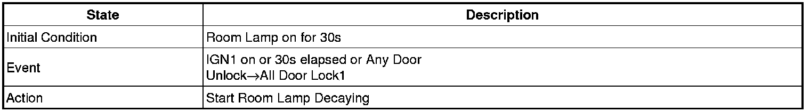
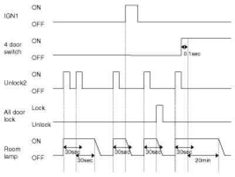
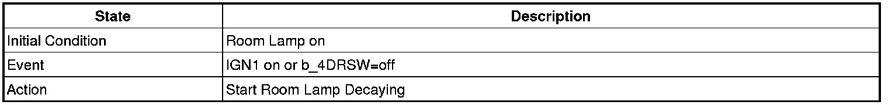
5. Room Lamp on for 20min
Power Window Timer
Data Flow
Function Description
1. Safety Power window Enable and power window main output is turned ON at IGN1 ON.
2. Maintaining output at IGN1 OFF after 30 seconds Safety Power window Enable and power window main, Safety Power window Enable and power window main output is OFF.
3. Above (2) Driver door switch or Assist door switch in protest to the conditions when you OPEN, Safety Power window Enable and power window main output will be OFF immediately.
4. IGN1 OFF when the Safety Power window Enable and power window main output is OFF at driver door switch or Assist door switch OPEN.
T1 : 30 ± 3sec
Door Lock/unlock Control
Data Flow
Central Door Lock/unlock
1. ALL DOOR LOCK output is ON during T1(0.5s) if C_DRV Unlock State or C_AST Unlock State is LOCK within 3sec after C_DRV Key Lock SW is turned ON. But, KEY IN ON & L_IGN1 ON when output is prohibited.
2. C_Door Unlock Rly output is ON during T1(0.5s) if C_DRV Unlock State is UNLOCK within 3sec after C_DRV Key Unlock SW is turned ON.
3. C_Door Unlock Rly output is ON during T1(0.5s) if C_AST Unlock State is UNLOCK within 3sec after C_AST Key Unlock SW=ON is turned ON.
4. ALL DOOR LOCK output is ON during T1 at TX Lock ON or C_ C_SMKRKECMD = LOCK or C_Passive Lock ON.
5. ALL DOOR UNLOCK output is ON during T1 at TX Unlock ON or C_ SMKRKECMD = UNLOCK or C_Passive Unlock ON(NA C_P_FR=ON).
6. ALL DOOR LOCK output is ON during T1 at C_Pwdw DR Lock SW=ON.
7. ALL DOOR UNLOCK output is ON during T1 at C_Pwdw DR Unlock SW=ON. But, C_Pwdw DR Unlock SW=ON signal is ignored in ARM, ARM WAIT,REARM, ALARM state.
8. LOCK/UNLOCK by (8) C_DRV Unlock State, C_AST Unlock State operation is not interlocked. (mechanical operation)
9. Shall be no malfunction at Battery connection. (shall be no malfunction even at L_Key In SW).
10. When the output of the reverse direction is required and the current output immediately OFF, after 100ms delay and output to the reverse. But, during 100ms delay when output is required the output needs to eventually send us the output.
11. If LOCK output and UNLOCK output conditions at the same time, LOCK output is done, and the UNLOCK output is ignored.
12. If ALL DOOR LOCK state of the output conditions at ALL DOOR LOCK status, the actual output is not,and ALL DOOR UNLOCK state of the output conditions at ALL DOOR UNLOCK status, the actual output is not.
13. ALL DOOR LOCK(UNLOCK) SW always output LOCK(UNLOCK) requirement by C_Pwdw DR Lock SW(C_Pwdw Unlock SW), TX Lock, TX Unlock, C_SMKRKECMD=LOCK,C_SMKRKECMD=UNLOCK, C_DRV Key Lock SW, C_DRV Key Unlock SW, C_AST Key Unlock SW regardless of LOCK(UNLOCK) state.
14. At IGN1 ON, LOCK output is prohibited by DOOR KEY LOCK SW.
T1 : 0.5 ± 0.1sec
2-Turn Unlock
1. ALL DOOR UNLOCK output is ON during T3 if C_DRV Unlock SW is UNLOCK within 3s and C_DRV Key Unlock SW is OFF->ON within T1 after C_DRV Key Unlock SW is OFF -> ON (mechanically, C_DRV Unlock SW is unlocked and BCM signal doesn't output).
2. ALL DOOR UNLOCK output is ON during T3 if C_DRV Unlock SW is UNLOCK within 3s and TX Unlock is received within T1 after C_DRV Key Unlock SW is OFF -> ON (mechanically, C_DRV Unlock SW is unlocked and BCM signal doesn't output).
3. DRIVER DOOR UNLOCK output is ON during T3 when TX Unlock signal is received. But, ALL DOOR UNLOCK output are ON during T3 if TX Unlock signal is received within T1.
4. ALL DOOR UNLOCK output is ON during T3 if C_DRV Key Unlock SW is OFF->ON (mechanically,C_DRV Unlock SW is unlocked and BCM signal doesn't output) within T1 after TX Unlock received and C_DRV Unlock SW is UNLOCK within 3s.
5. When other registered TX Unlock signal is received within T1, they are regarded as the same TX.
6. At C_DRV Unlock SW UNLOCK state, the DRIVER DOOR UNLOCK requirement does not output.
7. DRIVER DOOR UNLOCK output will be according to ALL DOOR UNLOCK output when the DRIVER DOOR UNLOCK output of the ALL DOOR UNLOCK output requirements.
T1 : 4 ± 1sec, T2 : 0.5 ± 0.1sec
2-Turn Unlock (SMK)
1. ALL DOOR UNLOCK output is ON during T3 if C_DRV Unlock SW is UNLOCK within 3s and C_DRV Key Unlock SW is OFF->ON within T1 after C_DRV Key Unlock SW is OFF -> ON (mechanically, C_DRV Unlock SW is unlocked and BCM signal doesn't output).
2. ALL DOOR UNLOCK output is ON during T3 if C_DRV Unlock SW is UNLOCK within 3s and C_SMKRKECMD = UNLOCK is received within T1 after C_DRV Key Unlock SW is OFF -> ON (mechanically, C_DRV Unlock SW is unlocked and BCM signal doesn't output).
3. DRIVER DOOR UNLOCK output is ON during T3 when C_SMKRKECMD = UNLOCK signal is received. But, ALL DOOR UNLOCK output are ON during T3 if C_SMKRKECMD = UNLOCK signal is received within T1.
4. ALL DOOR UNLOCK output is ON during T3 if C_DRV Key Unlock SW is OFF->ON (mechanically,C_DRV Unlock SW is unlocked and BCM signal doesn't output) within T1 after C_SMKRKECMD = UNLOCK received and C_DRV Unlock SW is UNLOCK within 3s.
5. DRIVER DOOR UNLOCK output is ON during T3 when C_Passive Unlock ON & C_P_FL ON is input. But, ALL DOOR UNLOCK output is ON during T3 if C_Passive Unlock ON & C_P_FL ON is input within T1.
6. DRIVER DOOR UNLOCK output is ON during T3 when C_Passive Unlock ON & C_P_FL ON is input. But, ALL DOOR UNLOCK output is ON during T3 if C_DRV Key Unlock SW is OFF -> ON & C_P_FL ON is input within T1.
7. DRIVER DOOR UNLOCK output is ON during T3 when C_Passive Unlock ON & C_P_FL ON is input. But, ALL DOOR UNLOCK output are ON during T3 if C_SMKRKECMD = UNLOCK is received within T1.
8. At C_DRV Unlock SW UNLOCK state, the DRIVER DOOR UNLOCK requirement does not output.
9. DRIVER DOOR UNLOCK output will be according to ALL DOOR UNLOCK output when the DRIVER DOOR UNLOCK output of the ALL DOOR UNLOCK output requirements.
IGN Key Reminder
1. This function is not performed when vehicle speed is more than 3km/h.
2. ALL DOOR UNLOCK signal is output for 1s after 0.5s from when the state becomes IGN KEY ON& C_DRVDRSW = OPEN & C_DRV Unlock State = LOCK.(Except NA)
3. DRIVER DOOR UNLOCK signal is output for 1s after 0.5s from when the state becomes IGN KEY ON& C_DRVDRSW = OPEN & C_DRV Unlock State = LOCK.(Only NA)
4. ALL DOOR UNLOCK signal is output for 1s after 0.5s from when the state becomes IGN KEY ON & C_ASTDRSW = OPEN & C_AST Unlock State = LOCK.
5. ALL DOOR UNLOCK signal is output for 1s after 0.5 from when (1),(2),(3) concurrent satisfaction, (3) paragraph pursuant (Except DEAD LOCK)
6. UNLOCK signal is output 3 times as Max (1s-output is excluded) in case LOCK state is held even when UNLOCK signal is output for 1s in (2),(3),(4). (1s cycle: 0.5s ON/OFF)
7. After (6) of Section, when C_DRVDRSW is CLOSE CENTRAL UNLOCK in the LOCK state attempts one-time attempt.
8. ALL DOOR UNLOCK signal is output (only once) during 1s if C_DRVDRSW is CLOSE within 0.5s from C_DRV Unlock State UNLOCK -> LOCK under IGN KEY ON.(Except NA)
9. DRIVER DOOR UNLOCK signal is output (only once) during 1s if C_DRVDRSW is CLOSE within 0.5s from C_DRV Unlock State UNLOCK -> LOCK under IGN KEY ON.(Only NA)
10. ALL DOOR UNLOCK signal is output (only once) during 1s if C_ASTDRSW is CLOSE within 0.5s from C_AST Unlock State UNLOCK -> LOCK under IGN KEY ON.
11. ALL DOOR UNLOCK signal is output (only once) during 1s if C_DRV Unlock State is UNLOCK->LOCK within 0.5s from C_DRVDRSW OPEN -> CLOSE under IGN KEY ON.(Except NA)
12. DRIVER DOOR UNLOCK signal is output during 1s if C_DRV Unlock State is UNLOCK->LOCK within 0.5s from C_DRVDRSW OPEN -> CLOSE under IGN KEY ON.(Only NA)
13. ALL DOOR UNLOCK signal is output (only once) during 1s if C_AST Unlock State is UNLOCK->LOCK within 0.5s from C_ASTDRSW OPEN -> CLOSE under IGN KEY ON.
14. At IGN KEY=ON after C_DRVDRSW or C_ASTDRSW is OPEN if the C_Pwdw DR Lock SW ON, KEY REMINDER function is performed.
15. Judgment of the possibility of RETRY signal output is performed at RETRY signal output start.
(after 1.5s from the first UNLOCK signal output)
16. After the condition if UNLOCK is met, UNLOCK signal is output if the condition is not held for 0.5s. But, UNLOCK signal is not output if KEY IN is OFF at the moment that 0.5s passes after the condition is met by C_DRV Unlock State or C_AST Unlock State change from UNLOCK to LOCK.
T1,T3 : 0.5 ± 0.1sec, T2 : 1 ± 0.1sec, T4 : 0.5sec Max
KEY IN ON : Key in ON or ACC = 1 or IGN1 ON or IGN2 ON
KEY IN OFF : Key in OFF and ACC =0 and IGN1 OFF and IGN2 OFF
IGN KEY ON : Key in switch(Fob in) ON or ACC ON or IGN1 ON or IGN2 ON
IGN KEY OFF : Key in switch(Fob in) OFF and ACC OFF and IGN1 OFF and IGN2 OFF